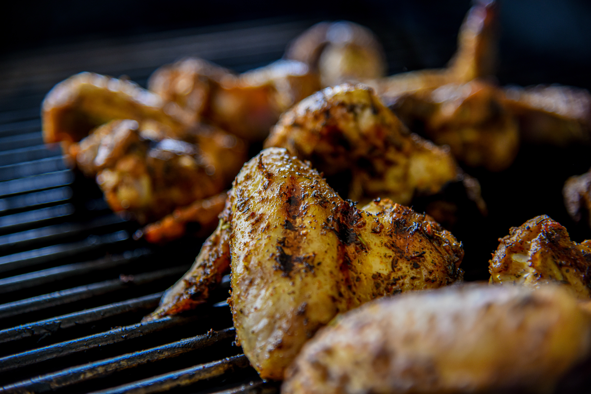

BBQ Chicken

Ingredients:
- 3 cups sweet barbeque sauce
- 1 cup Italian salad dressing
- 4 (8 ounce) bone-in chicken legs with skin
- hickory wood chips as needed
Directions
- Mix barbecue sauce and salad dressing together.
- Put chicken legs in a large zip-top bag and pour sauce
all over them. Squeeze out the excess air and seal the bag.
Massage marinade into the chicken a bit,
then refrigerate for 4 hours.
- Remove chicken from the refrigerator;
set bag on the counter and bring to room temperature, about 1 hour.
- Preheat an outdoor grill for medium-low heat and lightly oil the grate.
Load a smoker box with wood chips and set on the grate.
- Remove chicken from the bag and transfer to the preheated grill.
Cover and cook for 10 minutes, then flip, basting both sides with the
remaining marinade.
- Continue to cook (with the lid closed and listening for flare-ups)
until chicken is no longer pink at the bone and the juices run clear,
about 10 more minutes. An instant-read thermometer inserted near
the bone should read 165 degrees F (74 degrees C).
- Remove chicken to a platter and tent with foil. Let rest for 5 minutes before
serving.